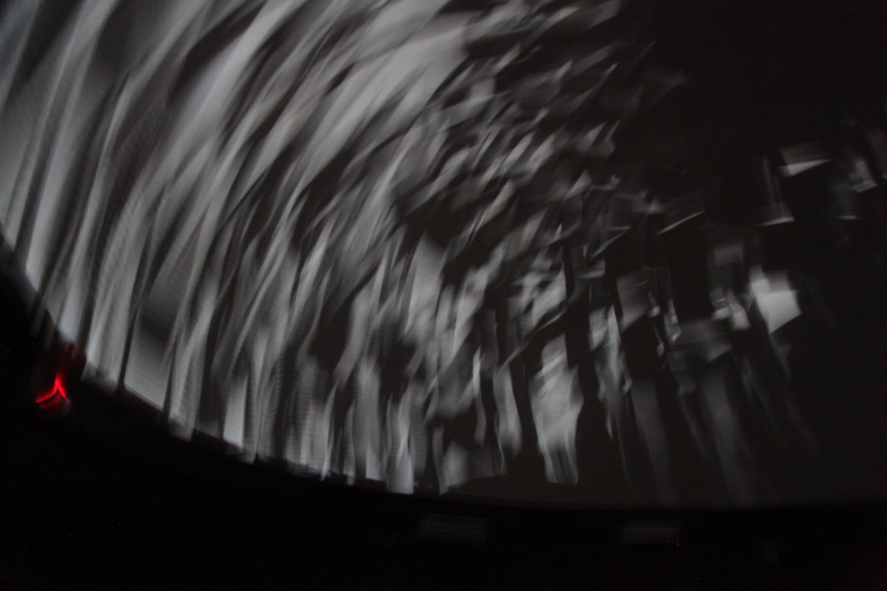
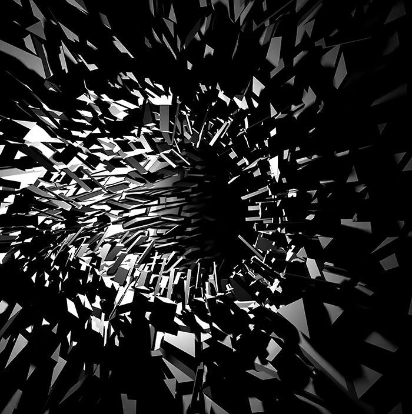

UBA · Licenciatura en Diseño de Imagen y Sonido / Taller Fulldome
Proyecto experimental de visualización de datos concebido para entornos fulldome, donde la navegación de información se transforma en una experiencia espacial inmersiva.
Asterismo IDIS es un proyecto de visualización de datos concebido para entornos fulldome. Desarrollado en el marco de experiencias vinculadas al Planetario Galileo Galilei de la ciudad de Buenos Aires, el proyecto propone un sistema de navegación espacial de bases de datos donde la información se organiza como constelaciones visuales dentro de la cúpula.
La obra funciona como un prototipo de interfaz inmersiva donde la exploración de información se convierte en una experiencia audiovisual envolvente, articulando visualización científica, diseño de información y tecnologías de proyección fulldome.
La obra resulta especialmente significativa para esta plataforma porque articula producción artística y contexto formativo. En ese sentido, permite pensar el fulldome como dispositivo pedagógico y como entorno de investigación-creación dentro de una experiencia universitaria.
También habilita el trabajo sobre visualización astronómica, composición audiovisual e inmersión, poniendo en relación prácticas académicas, experimentación técnica y construcción colectiva de conocimiento.
Asterismo IDIS se inscribe en un marco de producción colectiva asociado a la Licenciatura en Diseño de Imagen y Sonido de la UBA y al Taller Fulldome. Esto le da a la obra un lugar particular dentro del archivo, ya que no solo representa una pieza inmersiva sino también un proceso de formación y transferencia de saberes.
Dentro de la curaduría de la plataforma, la obra puede leerse como un caso que articula visualización, exploración celeste, diseño audiovisual e institucionalidad académica.
Registro de la obra disponible en archivo externo.

▶